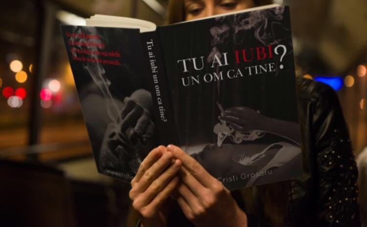
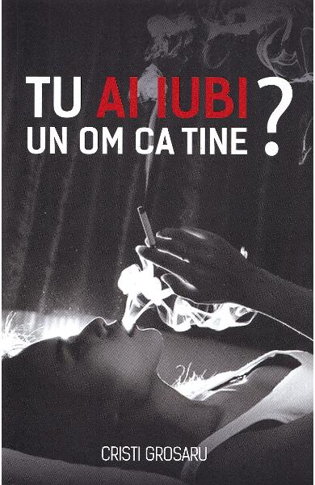

-
.jpg)
-
.jpg)
- 

Natura umană este făcută în așa fel încât să caute. Să caute ce nu are. De aceea alergăm după
persoane
care nu ne vor și după lucruri care nu ne trebuie. Secretul este să te oprești și să te uiți la
persoanele care te doresc și la lucrurile pe care le deții.
Renunță la a mai alerga! Renunță, ca să poți deveni prezent! A renunța la oameni și lucruri care
nu-și aparțin presupune, printre altele, descoperirea propriei persoane.
Ceea ce te leagă de aceste lucruri este doar atașamentul care-ți asigură o nevoie falsă de
afecțiune. De
ce? Pentru că tu ai nevoie de oameni și de lucruri, nicidecum de atașamente. Așa că, renunță la
toată
această alergătură ca să poți deveni liber.
Și nu uita un lucru: ești tratat în funcție de gradul de confort pe care-l oferi. Așa că, nu te
aștepta
ca oamenii din jurul tău să-ți aplaude suferințele.
.jpg)
.jpg)
Încă din titlu, Cristi Grosaru ne îndeamnă la o introspectivă, ne îndeamnă să ne punem întrebări și să căutăm răspunsuri sincere, acele răspunsuri pe care nu e nevoie să le împărtășim, dar e absolut necesar să le cunoaștem noi, pentru că în esență doar pentru noi contează.
.jpg)
 "Tu ai iubi un om ca tine?" e o întrebare atât de simplă în complexitatea ei! O întrebare la
care
mulți ne-am grăbi să răspundem afirmativ:Da, merit să fiu iubit!
Deseori rătăcim pe tărâmuri străine pentru a ne găsi pe noi înșine. Autorul ne propune să nu mai
alergăm atât de departe ci să ne oprim o clipă și să privim mai atent în interiorul nostru. Suntem
asemănători, dar totodată atât de diferiți și ar fi bine să nu ne mai comparăm atât de mult cu
ceilalți și să acordăm mai multă atenție nevoilor noastre. Dacă am da drumul numai puțin suferinței
pe care deja o considerăm identitatea noastră, am putea vedea mici raze de speranță, dar primul pas
este cel mai greu de făcut.
"Tu ai iubi un om ca tine?" - un titlu care trezește o oarecare curiozitate în mintea cititorului.
Eu, personal, până să văd titlul acestei cărți, nu mi-am pus niciodată o asemenea problemă - cel
puțin nu sub forma aceasta - și cred că este destul de important să încerci, înainte de a judeca
alți oameni pentru atitudinea lor în raport cu tine, să ajungi să te cunoști atât de bine încât să
realizezi că nu ești perfect, dar te poți perfecționa în fiecare zi cu pași mici, dar eficienți.
(Recomand "Atomic Habits" în sensul acesta)
"Tu ai iubi un om ca tine?" e o întrebare atât de simplă în complexitatea ei! O întrebare la
care
mulți ne-am grăbi să răspundem afirmativ:Da, merit să fiu iubit!
Deseori rătăcim pe tărâmuri străine pentru a ne găsi pe noi înșine. Autorul ne propune să nu mai
alergăm atât de departe ci să ne oprim o clipă și să privim mai atent în interiorul nostru. Suntem
asemănători, dar totodată atât de diferiți și ar fi bine să nu ne mai comparăm atât de mult cu
ceilalți și să acordăm mai multă atenție nevoilor noastre. Dacă am da drumul numai puțin suferinței
pe care deja o considerăm identitatea noastră, am putea vedea mici raze de speranță, dar primul pas
este cel mai greu de făcut.
"Tu ai iubi un om ca tine?" - un titlu care trezește o oarecare curiozitate în mintea cititorului.
Eu, personal, până să văd titlul acestei cărți, nu mi-am pus niciodată o asemenea problemă - cel
puțin nu sub forma aceasta - și cred că este destul de important să încerci, înainte de a judeca
alți oameni pentru atitudinea lor în raport cu tine, să ajungi să te cunoști atât de bine încât să
realizezi că nu ești perfect, dar te poți perfecționa în fiecare zi cu pași mici, dar eficienți.
(Recomand "Atomic Habits" în sensul acesta)